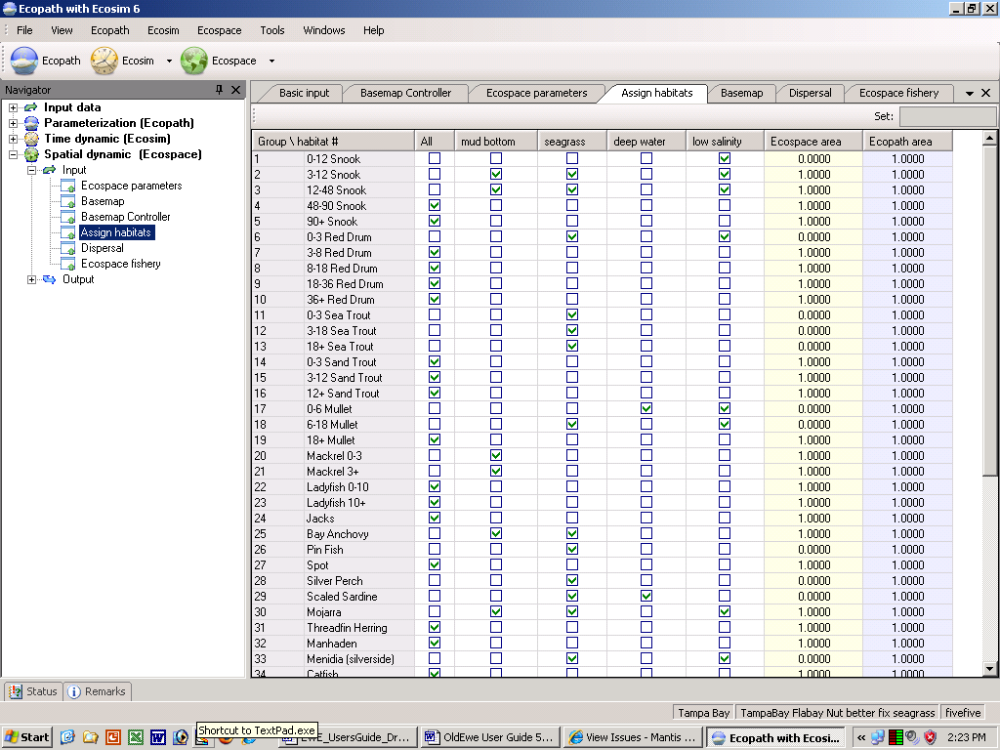

Once habitats have been defined (see Define Ecospace habitats), (and sketched onto the Basemap), the components of the underlying Ecopath model must be assigned to their ‘preferred’ habitat. ‘Preferred’ here means that the group in question will be adapted such that
All three of these choices imply different mechanisms for defining what is good and bad habitat. Users can determine (through the Dispersal form) the relative strength of these mechanisms.
However, the first job is to assign groups to habitats, which is easy to do if the habitats have been defined in terms of parameters that are themselves easy to determine.
Note organisms at the upper trophic levels, due to their high mobility will tend to ‘prefer’ a wide range of habitats rather than a specific one.
Also note that definition of habitat in Ecospace usually includes the entire water column, from the surface to the bottom. Thus, while ‘rockfishes’ will tend to be limited to hard bottoms, and burrowing bivalves to soft bottoms, small coastal pelagics, which occur higher up in the water column, may ‘prefer’ hard and soft bottom habitats, as long as both are coastal.
Thus, if the habits defined are ‘shallow’ and ‘deep’, assigning the groups to their preferred habitat simply consists of clicking ‘shallow’ for model groups known to limit themselves to shallow waters, and conversely for ‘deep’.
Note, however, that organisms assigned e.g. to ‘deep’ waters will usually consume preys also assigned to ‘deep’ waters, and conversely for shallow water organisms. Only groups assigned to ‘All’ habitats can be expected to feed indiscriminately in all habitats.
In the special case of multi-stanza groups, it will be appropriate, in most cases, to assign the juveniles to one or several inshore/shallow habitats, out of reach of the often ‘cannibalistic’ adults, assigned to habitats that are deeper, or further offshore.

Figure 10.7. Assign groups to Ecospace habitats. The ‘Ecospace area’ is calculated from the basemap, while the ‘Ecopath area’ is the habitat area fraction assigned to the individual group in the underlying Ecopath model. When Ecospace shows initial imbalance at the start of a simulation it my be because of inappropriate distribution of habitat areas, and a more careful allocation if often required to improve model behaviour.